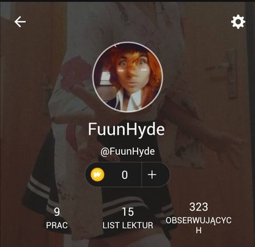

...
This side will be my "comfort space" and I hope it will help me calm down if needed, or remind me to do something with the time.
It's hard for me to focus sometimes, work on something right away, or do things systematically. So I thought it would be good to do for my project something I will most likely use. So below will be a lot of things I'm interested in or find difficult to do without some kind of reminder.
So let's start with something I'm crazy about, starting with good things just seems right to me. Writting! I'm totally obsesd with writing, telling stories, creating different characters and realities. I litteraly can't stop think about plot ideas or new characters,with is sometimes kind of distracting in wors situations, but well, at least it's somehow usefull.

Wattpad is my little, cosy toll, that helped me improved a lot! I publish there my works, chapter after chapter, and with time I can see how much my style changed and how my writing got better. It has a lot of great features to make tekst more intresting looking and "sounding". Also it's easy to get feedback there whith is really great! It's what I think helped me improved the most and at hte same times keept me really motivated!
As for other apps I use during writing, that I would like not to forget about:
| Name | What I use it for |
|---|---|
| Character Planner | Creating characters |
| Okładki Książek | Book covers |
| Synonimy | Well synonims |
| Licznik Tekstu | Word cound |
| SoundCloud | Music in background |
| Inspirations,story themes | |
| Notatnik | Brain storming, little ideas |
Right now I am writing 3 stories; fanficions to be more exact. It's a form of "sharpening my pen" befor starting my own-own stories. And here they are, with links to the 1st chapters for easy acces:
"Trust"
"Wine & Whiskey"
"Blood Pact"
So like I'm low key obsesed with numbers and counting anything to keep my mind occupated. So I thought of this little number generator to give me a number that I should look for in that day.
So next one is a random-comort-episode generator! It conteins some of my most favourite episodes and with one click generates what I shall watch since I'm not good at picking anything! And I can always add more episodes to the list later ^^ (but that in "app.js" not here)
...
I tend to forget most basic things so here comes some checkboxes since they're relly motivating somehow!
I just added a search engine that conects to Bing, so I have another way out of here. Also few links to where I am most likely to go anyway so it's like One click away.